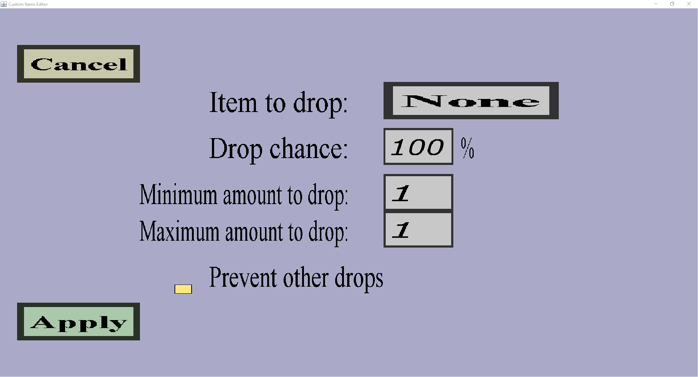

The drop menu is the menu where you can select which items should have which chance to be dropped. You can also select some additional restrictions.
The 'Choose...' button on the right of 'Items to drop:' will take you to the output table menu. In that menu, you can choose which items should have which chance to be dropped. Note that at most 1 of the entries you choose can be dropped. If you want to drop more than 1 type of item at the same time, you will have to create multiple mob or block drops.
The 'Choose...' button on the right of 'Items that must be held/used:' will take you to the custom items selection menu where you can select which items the player must use in order to be able to get this drop. To give an example, the following will happen if you select only a ruby pickaxe (a custom item):
The 'Choose...' button on the right of 'Allowed biomes:' will take you to the allowed biomes menu where you can configure in which biomes this drop can happen (and in which biomes it can't happen).
If this checkbox is checked and an item is dropped because of this drop, no normal items will be dropped. (If this drop is for a zombie, no rotten flesh will be dropped. If this drop is for stone, no cobblestone will be dropped.)